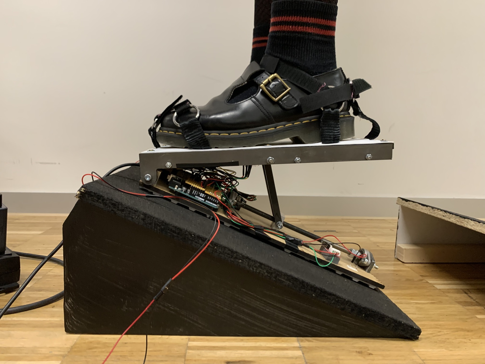
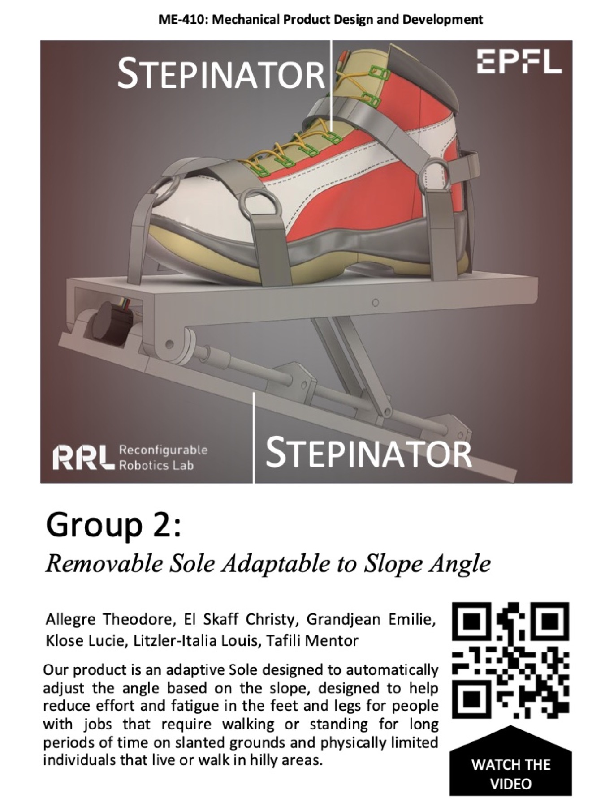

Fall 2024 · ME-410 Mechanical Product Design & Development
Stepinator: Adaptive Shoe Sole
A removable sole that automatically adjusts its angle to the slope underfoot, taken from idea to working prototype.
- Reconfigurable Robotics Lab (RRL), EPFL
- Team of 6
- Working prototype, presented at demo day
The problem
Standing or walking for long periods on sloped ground increases the load on knees and ankles, and is linked to a higher risk of musculoskeletal problems. This concerns workers in construction, agriculture, maintenance and other outdoor jobs, as well as people with limited mobility who live in hilly areas.
The device
A detachable sole that attaches to standard footwear and automatically adapts its angle to the ground slope:
- Automatic angle adjustment to match the foot angle to the ground.
- Slope range: inclines up to 35°.
- Load: supports more than 100 kg.
- Detachable: straps onto ordinary shoes.
Design process
- Problem identification and user research
- Concept development and ideation
- CAD modelling and mechanical design
- Prototype fabrication and assembly
- Testing on different slope angles and iterating
- Final prototype, presentation and documentation
Gallery

